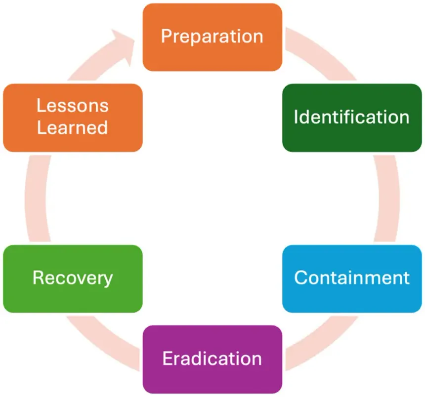
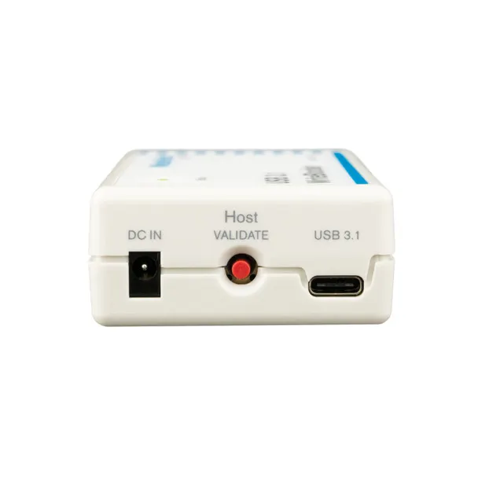
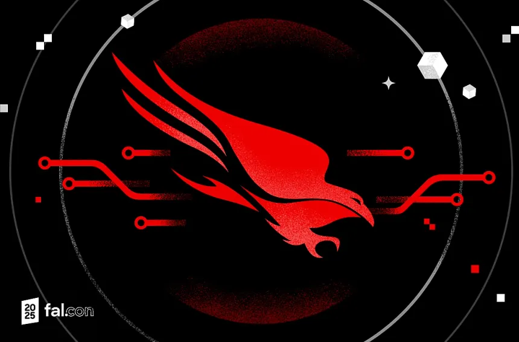

Members: Blake Bedford, Brit Stevens, Cambell Xiao, Lance Wilson
What Is Incident Response?
Incident response is the process an organization follows in order to detect, prevent, and respond to any cyberattacks directed at it [1]. This could range from an internal breach to external ransomware, but an organization has an incident response plan for both. At its core, incident response provides a structured framework to manage and mitigate security events efficiently, ensuring business continuity if an event occurs [2].
What is the Background And Foundation of IR?
Write a background and when it was widely adopted, who is labled as the creator of the norm procedure today
Why is IR Important, and where is it applicable?
The goal of Incident Response is the prevention of cyberattacks before they happen and the minimization of cost and business disruptions of any cyberattacks that occur. An effective response to an incident allows an organization to detect and contain cyberthreats, restore damaged systems, and minimize lost revenue.
Given the nature of Cybersecurity threats and vulnerabilities, an application will never be completely safe from attacks and exploitation. All systems will eventually be compromised or damaged in some way due to software bugs, configuration errors, human mistakes, newly discovered exploits, or vulnerabilities within dependencies. This means that no system can be considered permanently secure. Thus, Incident Response is applicable to any and all software that is connected to a network, accessible by users, or responsible for handling data or critical business operations.
Incident Response ensures that when a compromise occurs, organizations have a structured process to quickly detect the attack, contain the threat, eradicate the threat, recover affected systems, and learn from the incident to prevent similar attacks in the future. By preparing for incidents in advance, organizations can significantly reduce downtime, financial loss, and reputational damage associated with cyberattacks.
What Methods, Techniques, and Tools are used?

Copyright exabeam- Methods:
- Preparation
- Establishing incident response plans, policies, and communication procedures before an incident occurs, including training team members and setting up necessary tools and resources.
- Identification
- Detecting and determining whether an event qualifies as a security incident through monitoring systems, analyzing alerts, and reviewing logs.
- Containment
- Isolating affected systems to prevent the threat from spreading further, using short-term strategies like network segmentation and long-term strategies like applying temporary fixes.
- Eradication
- Removing the root cause of the incident entirely from the environment, such as deleting malware, disabling compromised accounts, and patching exploited vulnerabilities.
- Recovery
- Restoring affected systems to normal operations by rebuilding systems, restoring from verified clean backups, and monitoring for signs of reinfection.
- Lessons Learned
- Conducting a post-incident review to document what happened, what worked, what failed, and how to improve the response process for future incidents.
- Techniques:
- Log Analysis
- Reviewing system, application, and network logs to trace attacker activity, establish timelines, and identify indicators of compromise (IOCs).
- Network Traffic Analysis
- Monitoring and inspecting network packets and flow data to detect command and control (C2) communications, data exfiltration, or lateral movement.
- Forensic Imaging
- Creating bit-for-bit read-only copies of affected drives so that all analysis is performed on static copies rather than the live environment, preserving evidence integrity.
- Threat Intelligence Correlation
- Cross-referencing observed IOCs such as IP addresses, file hashes, and domains against known threat intelligence feeds to attribute and understand the attack.
- Triage and Prioritization
- Rapidly assessing the scope and severity of an incident to allocate resources effectively and address the most critical threats first.
- Tools:
 © Silicon Forensics
| Write Blockers Hardware or software devices used during forensic imaging to prevent any modifications to the original evidence drive, ensuring data integrity and preventing issues like time stomping. |
© Splunk | SIEM (Security Information and Event Management) Platforms Used to aggregate, correlate, and analyze log data from across the organization in real time to detect anomalies and generate alerts during identification and containment. |
 © Crowdstrike | EDR (Endpoint Detection and Response) Tools Deployed on endpoints to continuously monitor for suspicious behavior, enabling rapid detection, investigation, and containment of threats at the device level. |
© Sleuth Labs | Forensic Analysis Suites (e.g., EnCase, Autopsy, FTK) Used to examine forensic images, recover deleted files, analyze file system artifacts, and build detailed timelines of attacker activity. |
© Wireshark | Packet Capture Tools (e.g., Wireshark, tcpdump) Used to capture and inspect raw network traffic to identify malicious communications, data exfiltration attempts, and lateral movement within the network. |
FAQ:
- Questions:
- How does an organization evaluate the effectiveness of a containment strategy?
- What is the difference between eradication and recovery in a live scenario?
- How do you prevent file modifications such as “Time Stomping” during a forensics investigation?
- Are there risks in restoring from backups during the recovery phase?
- Answers:
- An organization evaluates this by monitoring network traffic, logs, and system alerts to verify that the threat is no longer spreading and any command and control (C2) communications are stopped [3].
- Eradication involves neutralizing and removing the threat completely, while recovery is the secondary process of carefully restoring systems to normal functionality.
- To prevent the manipulation of evidence like time stomping, the incident response team cannot try to analyze a live, compromised environment. This is too risky and can give false information. They need to immediately capture read-only forensic images of the affected drives using write-blockers to conduct all analysis on the static copies.
- Yes, there are risks in the recovery phase by using backups since, like the live environment, the backups could also be compromised if the attacker hid their breach in the past. Restoring without verifying the integrity of a backup can reintroduce the threats [4].
References:
[1] J. Holdsworth and M. Kosinski, “What is incident response?” Ibm.com, Aug. 20, 2024. https://www.ibm.com/think/topics/incident-response [Accessed: Mar. 7, 2026].
[2] Fortinet, “What Is Incident Response? Process & 6 Step Plan,” Fortinet, 2025. https://www.fortinet.com/resources/cyberglossary/incident-response [Accessed: Mar. 7, 2026].
[3] National Institute of Standards and Technology (NIST), "Computer Security Incident Handling Guide," NIST Special Publication 800-61 Revision 2, Aug. 2012. [Online]. Available: https://nvlpubs.nist.gov/nistpubs/specialpublications/nist.sp.800-61r2.pdf [Accessed: Mar. 7, 2026].
[4] Cybersecurity and Infrastructure Security Agency (CISA), "Federal Government Cybersecurity Incident and Vulnerability Response Playbooks," Nov. 2021. [Online]. Available: https://www.cisa.gov/resources-tools/resources/federal-government-cybersecurity-incident-and-vulnerability-response-playbooks [Accessed: Mar. 7, 2026].